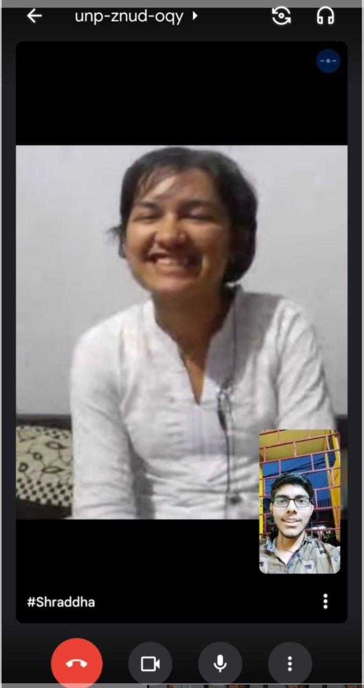

10/11 march 2022
Tujhe yaad hai shraddha is din kya hua tha?
Is din tune mujhe raat me padhaya tha, agle din english ka exam tha aur maine sirf 2-3 chapter
padhe the story wale. Na hi mujhe writing section k format pta the na hi poems....
Hua ye tha ki us din subah subah dadaji na gir gye the, aur fir vo uth nhi pa rhe the
jb hospital leke gaye tb pta chla ki fracture hai(bhut sare fractures the vaise) as usual maine padhai
ki nhi thi aur last day prepare karunga aisa soch kr baitha tha, to fir mujhe hospital jana pda is vajah se
padhne ka samay mila nhi
fir mai wapas aya raat tak, hamari kisi topic ko lekar whatsapp me baat ho rhi thi fir maine tujhe kuch keh diya
jiska regret mujhe 15 min baad hua ki aisa nhi bolna tha, tu thodi si naraz ho gyi thi. Tera sir bhi dard ho rha
tha, aur acha nhi lag rha tha(agle din subah hi tere periods aye the). Lekin mere thoda sa sorry bolne pr tu
normal bhi ho gyi.
maine bataya ki abhi tak sirf 1 hi chapter padha hu.
teri tbiyat theek nhi lagne k bawajood tune suggest kiya ki humlog sath me padhenge vo bhi subah jldi se(3 bje)
fir baad me ye bhi pta chla ki tu raat bhar soi bhi nhi, blki mujhe kya padhayegi iski tayari kr rhi thi aur akho me pani
daal daalkr apne aap ko jaga k rakhi thi. Hamari baatein start hue abhi 1 mhine bhi nhi hue the fir bhi shraddha tune
itna kuch kiya!

subah 5 bje k as pas tujhe periods aa bhi gye, fir bhi tu 5 min me wapas ayi aur fir hamne video on krke baatein bhi ki
mujhe tab bs itna pta tha ki periods me drd hota hai,
baadme tune bataya tha ki tujhe bhut zyada pain hota hai, normal se bhi zyada. Aur to aur 1st day sabse jyada pain hota hai
aaj mai sochta hu to lgta hai ki us samay mai bhi shyd itna nhi karta jitna tune usdin mere liye kiya.
mai ache se janta hu chahe kitna bhi chota exam ho lekin shraddha sabhi exams ko seriously leti hai
lekin agle din tera paper bhi acha nhi gaya tha kyuki tu raat bhar jagi thi, sirf taki mai padh saku....